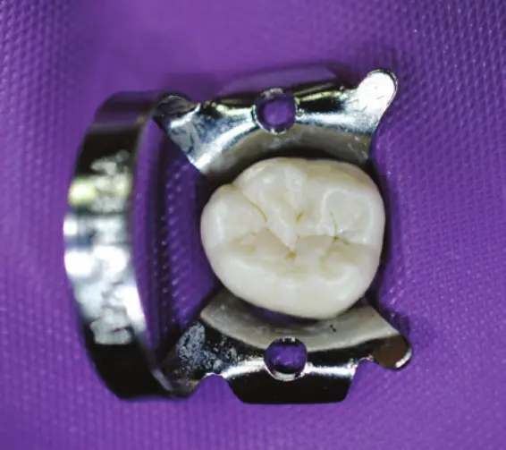

نسخه استخراجشده؛ ترجمه یا تأیید علمی انجام نشده است. وضعیت: captured
برای پسری ۷ ساله روی مولر اول دائمی پایین سیلانت میگذاری و بیحسی نزدهای. سطح را اچ کرده و شستهای؛ هنگام خشک کردن، کمی بزاق از روی رول پنبهی لینگوال روی شیار میآید. دستیار میگوید: «دوباره بشوییم و خشک کنیم.» کافی است؟

سیلانت رزینی آبگریز است و با گیر میکرومکانیکی روی مینای اچشده میماند. کمترین بزاق روی مینای اچشده لایهای میسازد که با شستن پاک نمیشود و منافذ اچ را میبندد. پس بزاق روی مینای اچشده یعنی اچ دوباره، نه فقط شستن و خشک کردن.
کودک باید روش ایزولاسیون و طول کار را تحمل کند. اگر همکاری نمیکند، سیلانت را عقب بینداز؛ اگر خطر پوسیدگی بالاست، سیلانت گلاسآینومر به روش ترمیم بازسازندهی آتروماتیک (ART) را بهعنوان سیلانت موقت بگذار.
زمان سیلانت: وقتی لثه هنوز روی ریج مارجینال دیستال مولر تازهرویش بود، بیش از نیمی از سیلانتها تا ۳۶ ماه دوباره گذاشته شدند؛ وقتی لثه همسطح ریج بود، ۲۶٪. جز در کودک پرخطر، صبر کن تا لثه به ریج مارجینال یا پایینتر برسد. در کودک پرخطر سیلانت بگذار و در صورت نیاز ترمیمش کن؛ اگر ایزولاسیون سخت است، سیلانت گلاسآینومر هم گزینه است.